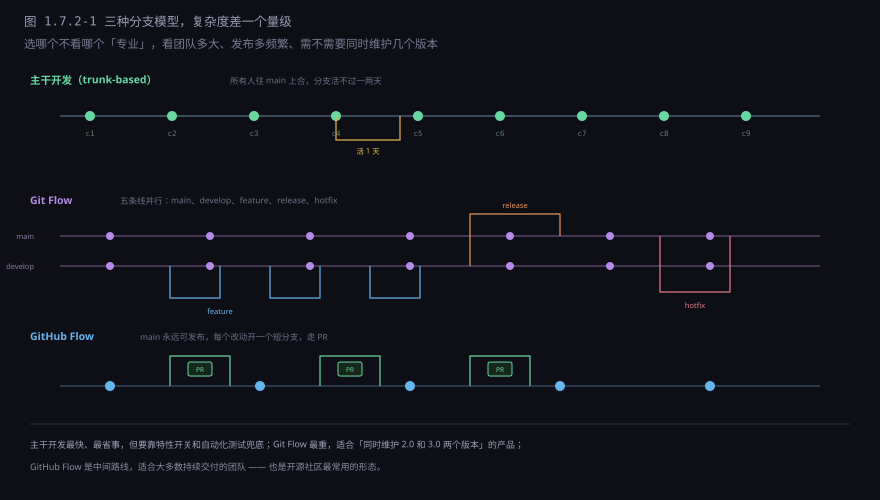
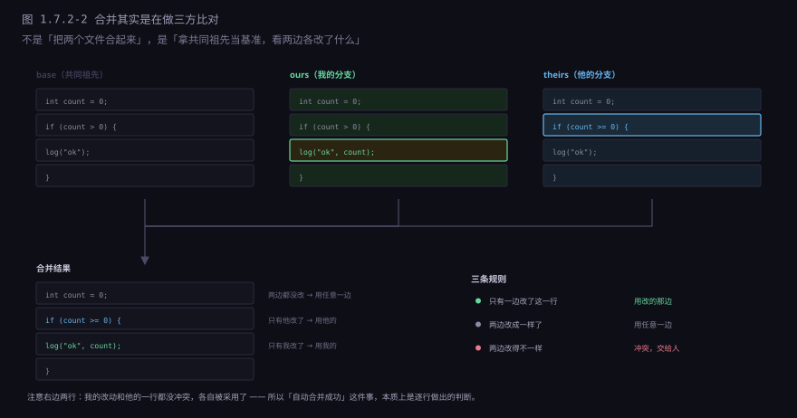
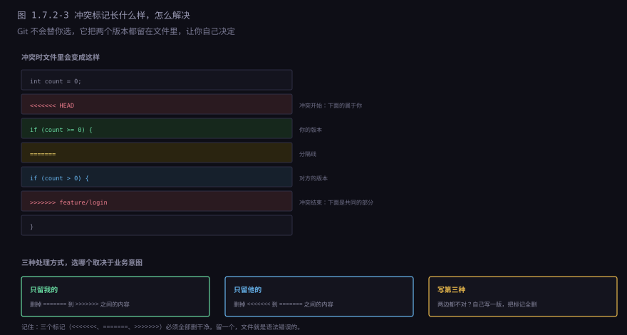
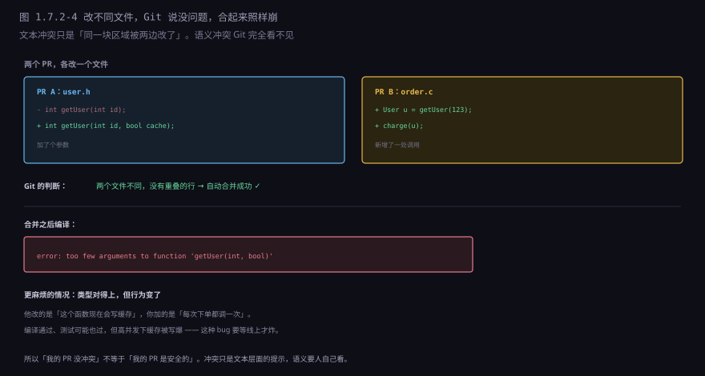
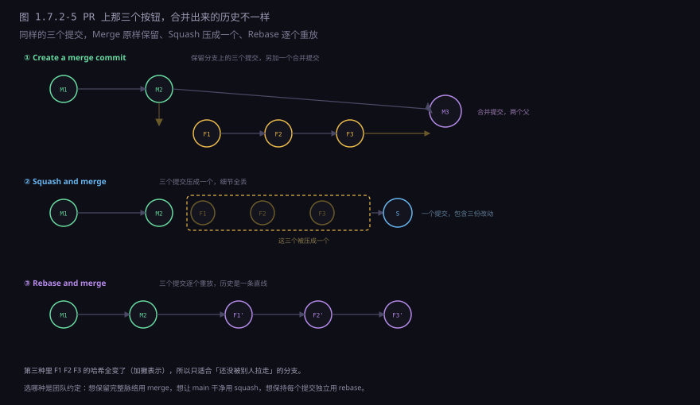
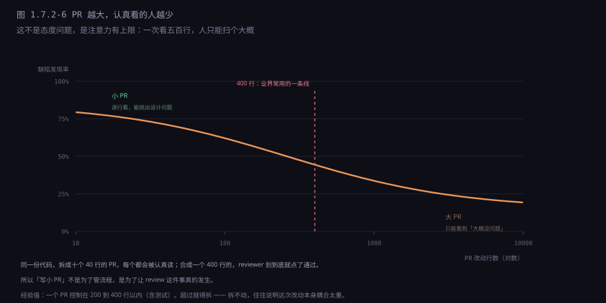

约 0.6 万字 · 6 张图 · 读完你能说清合并到底在比对什么、 冲突标记怎么读、为什么改不同文件也会撞车， 以及 PR 上那三个合并按钮该怎么选
具体的场景最容易看清问题。三个人，一个仓库，一天之内：
A：改了登录页的 header，动了 layout.css 和 login.html
B：改了同一页的 footer，也动了 layout.css
C：加了一个新页面，新建了 profile.html，并在路由表里加了一行
三个人各自提交，谁都没碰上谁——直到要合进 main。
A 最先合，顺利。
B 再合，冲突了：两人都动了 layout.css，
而且改的位置挨得很近（一个在文件上半段，一个在下半段，但如果中间只隔几行，
Git 会认为这是「同一块区域」）。
C 最后合，文件不冲突，但路由表那一行和 A 的改动正好相邻，也冲突了。
这里已经能看出三件事：冲突和「改哪个文件」有关，但更和「改的位置有多近」有关； 越晚合的人越倒霉（要解的冲突越多）； 先合的人占便宜（他的版本成了「基准」）。
补一句「挨得近」到底有多近：默认的上下文是 3 行。 意思是，如果两处改动之间隔着 6 行以上的没动过的代码，Git 就认为它们是两块独立的改动，能自动合； 隔得少于这个距离，就当成同一块，让你来决定。
这个数值可以调（git merge -X diff3 或者配置 merge.conflictStyle），
但大多数人不该调——它是一道安全边界，调松了会更容易「合出一个悄悄坏掉的版本」。
这套「谁先谁后」的不公平，是所有分支模型试图解决的问题。下面看三种主流解法。
分支模型不是 Git 的功能，是团队的约定：什么时候开分支、分支活多久、往哪儿合。

| 模型 | 分支活多久 | 适合 | 代价 |
|---|---|---|---|
| 主干开发 | 几小时到两天 | 持续交付、自动化测试强 | 要靠特性开关兜住半成品 |
| Git Flow | 几天到几周 | 同时维护多个发布版本 | 分支多、合并次数多、心智负担重 |
| GitHub Flow | 一两天 | 绝大多数 Web 团队 | 要求 main 随时可发布 |
主干开发为什么最快？因为分支活得越短，冲突窗口越小。 你上午开分支、下午合，中间只有几个小时的改动可能撞车； 你开一个分支活两周，这两周里 main 上发生的所有改动都可能和你冲突。
那 Git Flow 为什么还存在？因为有些产品真的需要「同时维护 2.0 和 3.0」： 2.0 只修紧急 bug，3.0 在开发新功能。这种场景下必须有长期分支， 代价就是每次 hotfix 都要往两条线上各合一次。
很多人以为合并是「把两个文件合起来」。不是—— 是拿「共同祖先」当基准，看两边各改了什么。这叫三方合并。

逐行的判断规则只有三条：
| 情况 | 处理 |
|---|---|
| 只有一边改了这一行 | 采用改的那边 |
| 两边改成了同样的内容 | 采用任意一边（结果一样） |
| 两边改得不一样 | 冲突，交给人 |
这就是为什么「自动合并成功」值得警惕：它只说明没有一行被两边同时改， 不说明合起来是对的。
还有一个细节：Git 判断「同一块区域」的单位不是行，是「改动块」（hunk）加上下文。 默认上下文是 3 行，意思是：两边改的行如果隔了 6 行以上，就不算冲突。 这也是为什么有时你会看到「明明改的是不同地方，怎么就冲突了」—— 因为中间隔得太近，被算成同一块了。
冲突的时候，Git 不会替你选，它把两个版本都塞进文件里， 用三个标记隔开，让你自己决定。

处理方式只有三种，选哪个取决于业务意图，不是取决于代码：
只留我的。说明对方的改动在这个位置不需要（可能他改的是旧逻辑）。
只留他的。说明我的改动是错的，或者他改的覆盖了我的需求。
写第三种。最常见的情况：两边都对，但合起来不对。
比如他改成了 >= 0，我改成了带参数的新调用，
真正需要的是「>= 0 加新参数」——这就是第三种。
顺带说一个能解释很多命令的细节：冲突期间，Git 的索引里同时存着三份这个文件。 一份是共同祖先（stage 1），一份是我的（stage 2），一份是他的（stage 3）。
git checkout --ours <文件> # 直接取我这一份（stage 2）
git checkout --theirs <文件> # 直接取他那一份（stage 3）
git diff <文件> # 看「合并结果 vs 我的」，冲突标记也会显示出来
所以「解决冲突」在底层就是：把索引里那三份合并成一份，然后 git add。
git add 之后 stage 1/2/3 消失，只剩 stage 0（正常状态），
这个文件就不再是「冲突中」了。
git log 看两边的提交信息，必要时 git blame 看那一行的来历，
搞清楚意图再动手。否则你会「解完冲突、测试也过」，但把别人的需求悄悄改没了。
这是多人协作里最容易被低估的一类问题：Git 说没冲突，合起来却崩了。

常见的四种「无冲突但会崩」：
| 类型 | 具体情形 | 怎么发现 |
|---|---|---|
| 接口变了 | A 改函数签名，B 新增调用 | 编译（静态语言）；测试（动态语言） |
| 重命名 / 搬家 | A 把函数移到另一个文件，B 在原地改它 | 编译报「找不到符号」，或者改动悄悄失效 |
| 共享配置 | 两人往同一个 JSON 数组里各加一项 | 有时能合，有时数组结构坏掉 |
| 约定变了 | A 改了「金额单位是分还是元」，B 按旧单位算 | 只能靠测试和 review |
最后一种最阴——它连编译都过，测试也可能过。 因为单测里 A 和 B 各自的用例都对，只有「A 的改动 + B 的改动」同时存在时才错。 这类问题只能靠合并之后跑全量集成测试发现。
把前面几节的东西串起来，一次冲突的处理大概是这样：
1. 先看清楚 git log --oneline main..HEAD 我这边改了啥
git log --oneline HEAD..main 他那边改了啥
2. 把 main 合进来 git merge main（或 git rebase main）
3. 一个个文件解 git status 看哪些是 both modified
4. 理解意图 git log -p <文件> / git blame <行>
5. 动手改 留我的、留他的、或者写第三种
6. 标记为已解决 git add <文件>
7. 跑测试 别急着 commit，先确认没改坏
8. 完成合并 git commit（merge）或 git rebase --continue第 1 步经常被跳过，但它决定了后面所有判断的质量。 不知道两边为什么这么改，你解的只是「文本」，不是「意图」。
第 7 步也是。很多人解完冲突就直接推了，结果 CI 挂在一片红里， 再去翻是哪个冲突解错了——那时候已经很难定位了。
还有一个减少冲突的实用技巧：频繁地把 main 合到自己分支， 哪怕还没做完。每次合一点点，冲突就小；攒两周再合，冲突就是一大坨， 而且你已经忘了当初为什么那么写。
至于用命令行还是图形化工具：三方合并的界面确实更适合图形工具。
VS Code 内置的合并编辑器、meld、kdiff3 都能把三个版本并排显示，
点一下「采用左边」「采用右边」，比手工删标记快得多，也更不容易漏。
但有一点要注意：工具只帮你搬文本，不帮你判断意图。 如果两边改的是同一个逻辑，工具显示的仍然是「两份文本」， 真正的决策（要不要写第三种）还是得你自己做。
GitHub、GitLab 上的 PR 页面都有三个合并按钮，它们合并出来的历史形状完全不同。

| 方式 | main 上多出几个提交 | 适合 | 代价 |
|---|---|---|---|
| Merge commit | 4 个（3 个原提交 + 1 个合并） | 想保留分支脉络 | 历史图会长出很多岔口 |
| Squash | 1 个 | 分支上是一堆「改改改」的碎提交 | 丢失中间过程，bisect 变难 |
| Rebase | 3 个（哈希全变） | 每个提交都干净、有意义 | 不能对已共享的分支用 |
Squash 有一个隐藏代价值得说：它让 git bisect 变难。
bisect 是「二分查找哪个提交引入了 bug」，它依赖提交粒度足够细。
如果你把十个改动压成一个，bisect 只能定位到「这十个之一」，还得人再翻。
方便了 review，牺牲了排查。
很多人以为 review 是「检查代码有没有写错」。不是——语法和低级错误该由 linter 和测试管， 让人去查这些是浪费。
Review 真正在审的是四件机器判断不了的事：
一是设计合不合理。这个抽象对不对？是不是在错误的地方加了逻辑？ 有没有更简单的做法？
二是边界处理全不全。空输入、超大输入、并发、失败重试—— 这些测试可能覆盖了，也可能没覆盖，看代码更容易发现遗漏。
三是命名和可读性。data、temp、flag
这种名字在写的时候很清楚，半年后看就是灾难。
四是有没有测试。没有测试的功能改动，等于把回归风险留给下一个人。
而 review 的质量，和 PR 的大小强相关。

400 行这条线不是硬规定，但它背后的机制很硬： 人的短期注意力撑不住一次处理几百个判断。 超过这个量，review 就退化成「扫一眼，看着像对的，通过」。
评论的写法也很影响协作。同一个问题，两种说法：
差： 这里不对，改一下。
为什么要用这个？看不懂。
好： 这里的 flag 如果传 true，会不会在并发下重复写？
我看 order.c:120 那个调用点没加锁。
（如果是有意为之，能不能补一句注释说明？）差别在于：好评论指出具体位置、说出担心的场景、并且承认自己可能看错。 它把「你错了」变成「我们一起看看这里」，对方不会防御，讨论才能继续。
反过来，作者也有一条义务：每条评论都要回。 哪怕只是「有道理，我改」或者「这里是有意的，因为……」。 一条没人回的评论，下次就没人愿意提了。
前面讲的都是「应该怎么做」。要让它真的发生，需要一点强制手段。
最常见的两条：
一是受保护分支。main 不允许直接 push，
只能通过 PR 合入。这一条挡住了「本地跑通了就直接推」的冲动。
二是 CI 门禁。PR 必须满足三个条件才能合： 自动化测试全过、至少一个人 approve、没有未解决的对话。
这两条看起来是「不信任开发者」，实际效果相反： 它把「检查」变成了默认动作，而不是靠人记得。 一个人再细心，也有赶时间的时候；而规则不会赶时间。
那 CI 里到底该跑什么？按「能不能挡住问题」排，顺序大概是：
| 阶段 | 跑什么 | 大概耗时 |
|---|---|---|
| 第一层 | 编译、lint、格式检查 | 几十秒 |
| 第二层 | 单元测试 | 一到三分钟 |
| 第三层 | 集成测试（真数据库、真容器） | 几分钟到十几分钟 |
| 第四层 | 端到端、构建产物、镜像 | 十几分钟 |
分层的目的不是「分类」，是让前面几层先失败： 编译都过不了，就别浪费十分钟跑集成测试了。 所以 CI 里步骤的顺序，应该按「失败概率」从高到低排， 而不是按「重要性」。
这一节把前面散落的线索收一下：为什么长期分支是灾难。
假设你开了一个分支，做了两周。这两周里 main 上前进了 40 个提交。 现在你要合回去，冲突的数量大致和「你改动的位置」×「别人改动的位置」成正比。 两周的改动量 × 40 个提交的改动量，这个乘积很大。
而且更麻烦的是：解冲突的时候，你已经忘了当初为什么那么写。 两周前的设计决策，现在只剩代码，没有上下文。
业界的说法叫「合并地狱」（merge hell）：分支拖得越久， 合并越像一场考古，最后往往以「算了，我重写一遍」收场—— 而那两周的工作就白费了。
解法有两个，都不是「更努力地解冲突」：
一是拆小。把两周的活拆成五个能独立上线的 PR， 每个都当天合。功能没做完就先藏着（特性开关）。
二是频繁同步。每天把 main 合到自己分支一次。 这样每次冲突都只有一天的量，好解，而且你还记得上下文。
Git 的合并能力有明确的边界，四条：
一是语义冲突。 前面讲过：它只比对文本。两个改动合起来逻辑错了，它完全不知道。 这一条只能靠测试和 review 补。
二是二进制文件。 图片、音频、Office 文档没法按行合并。两个人同时改，Git 只能说「冲突了，选一个」—— 它没法把两张图「合起来」。
三是大规模重构。 你把一个文件拆成五个、把类改名、把目录结构调整—— 这类改动会让所有并行分支的路径全部失效。 重构期间最好冻结其他人的改动，或者选在大家都不忙的时候做。
四是「谁改的」在合并之后就模糊了。
merge commit 里两个父提交的改动混在一起，git blame 会显示
「这一行来自 merge commit」，而不是真正改它的人。
要看清得加 -m 参数，或者看 merge 之前的历史。
这一节讲的所有东西，都发生在一个仓库之内： 分支、合并、冲突、review、门禁。 它们解决的是「同一个团队的几个人，怎么改同一份代码」。
但开源协作是另一回事：你不认识对方，对方也没有仓库的写权限。 那怎么让他贡献代码？
答案是 fork：他先把你的仓库复制一份到自己名下，在自己的副本里改， 然后发起一个「请把这个改动合进你的仓库」的请求。 这个请求叫 PR（Pull Request），意思是「请你 pull 我的改动」。 它能成立，是因为 Git 的仓库是去中心化的—— 任何两份历史只要有一个共同祖先，就能合并。
下一节就讲这套机制：fork 和 clone 差在哪、一个开源项目是怎么运转的、 以及为什么有些 PR 三个月没人理——那不是傲慢，是维护者的时间真的有限。
git bisect 变难。bisect 靠「二分查找哪个提交引入 bug」，依赖提交粒度够细；压成一个之后只能定位到「这一堆改动之一」，还得人再翻。